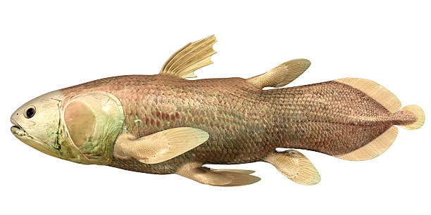
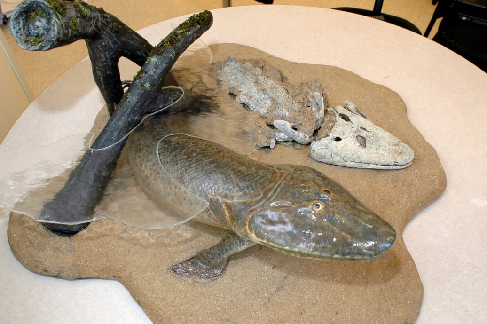
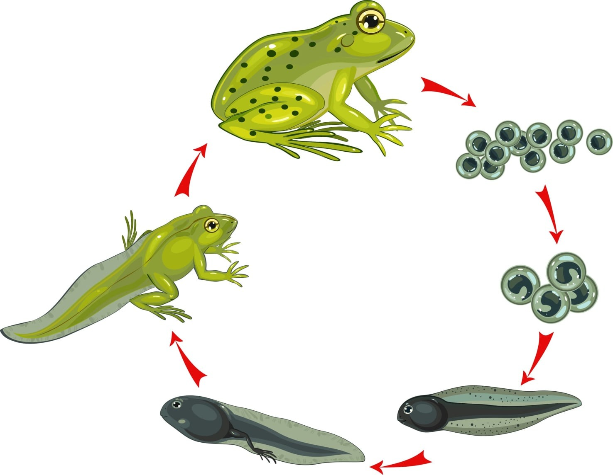

AI Website Generator
Eksempel på en kvastfinnet fisk. Læg mærke til de kraftige finner.
Padderne var de første hvirveldyr, der gik på land. Det skete for ca. 375 millioner år siden. I dag lever frøer, salamandre og ormepadder som repræsentanter for klassen.
En gruppe af benfiskene havde ikke tynde finner, men kraftige finner. Det er dem vi kalder kvastfinnede fisk. De havde samtidig udviklet primitive lunger til at klare sig i iltfattigt vand.
På dette tidspunkt var der kommet mange hvirvelløse dyr på land, men meget få rovdyr. Så med tiden udviklede kvastfinnede fisk sine kraftig finner til ben, og så var der masser af mad til alle padderne.

Øverst et fossil den berømte Tiktaalik, et overgangsdyr mellem fisk og padder. Nederst en model af hvordan man mener Tiktaalik så ud.

Metamorfose
Metamorfose: Padder gennemgår en forvandling fra vandlevende haletudse til landlevende voksen.
Fugtig hud ikke vandtæt hud: hvis den ikke er et fugtigt sted, tørre den ud og dør lige som en fisk.
Æg uden beskyttende hinder: hvis de ikke er et fugtigt sted, tørre de ud og dør lige som fiskeæg.
Fire lemmer: Tilpasset til bevægelse på land – et fundamentalt skifte fra finner.
Dobbelt åndedræt: Padder kan optage ilt både gennem lunger og gennem den fugtige hud.
AI Website Generator